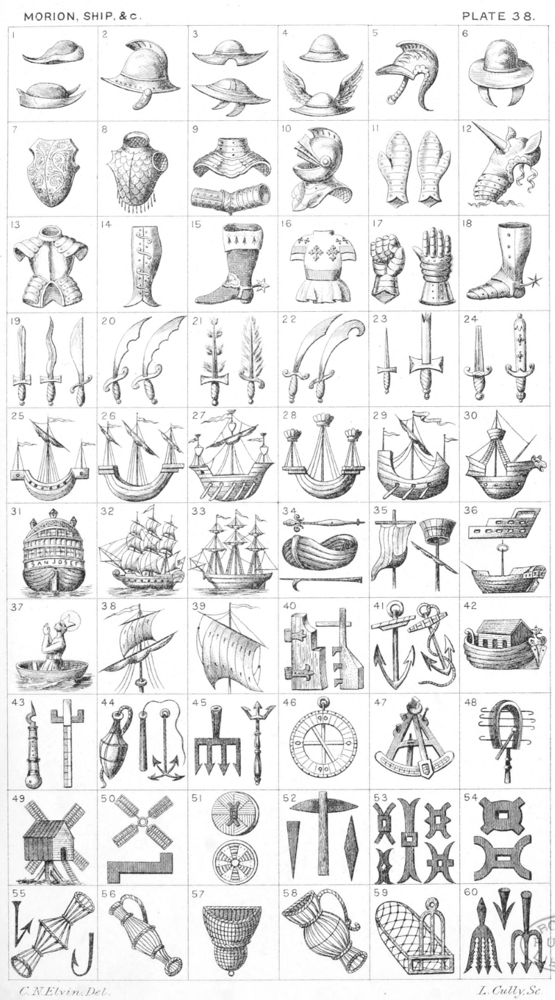

Plate 38.

Plate 38.
- Morion's
- Morion
- Morion's, the bottom one as borne
by Blake
- Basnet, or Basinet, or morion cap
as in the Crest of Cecil. Mercury's
Cap, or Petasus
- Burgonet
- Burgonet
- Cuirass
- Brigandine, or Habergeon
- Gorget ; and a Brasset, or Vambrace
- Helmet with vizor raised
- Dexter and Sinister Close-gauntlets
- Chamfrain, or armour for head of
a horse
- Armour for the Body
- Greave
- Boot sa. spurred or, turned over
Erm. or a Boot sa. top turned over
Erm, spurred or.
- Tabard
- Gauntlet closed; and an open Gauntlet
- Demi leg in armour
- A sword; a sword waved, or wavy
and a Falchion
- Two Seax
- Swords Flamant, or Flaming
- Cimeter, or Scymetar ; and Seax
- Dagger ; and broken sword
- The Curtana, or Sword of Mercy ;
and Sword of Estate
- Galley, or Lymphad
- Lymphad, also termed ship
- An ancient ship with oars, three
masts, sails furled, colours flying.
Crest of Lusk
- Lymphad
- Lymphad, or ship with oars
- Lymphad
- Stem of a ship. Crest of Nelson
- Ship in full sail
- Ship sails furled
- Magnetic needle ; a Boat ; and
Boat-hook
- Sail of a Ship ; and Round-top of a
mast
- A Demi Hull ; and the Hull of a
Ship having only one mast, round
top and bowsprit or. The Crest
of Masters and Mariners
- Coracle. See Dictionary
- Mast and Sail of a Ship flotant at top
- A Mast with a Sail hoisted, Crest
of Tennant
- Two Rudders, or Helms
- An Anchor, and Anchor with cable
- Noah's Ark
- A Boatswain's Whistle ; and a Cross,
or Fore-Staff
- Buoy with Cable, the Badge of
Nevill, a Lead-line ; and a grappling-iron
- Harpoon and Trident
- An Astrolabe
- Sextant, or Quadrant
- Sistrum
- Windmill
- Windmill-sails ; and a Mill-clack
- A Mill-stone charged with a Mill-rind. Mill or Water-wheel
- Mill-pick, between two Mill-bills, or
picks, the one on Sinister side as
borne in the Millers arms
- Mill-rind, or Fer-de-Mouline
- Two Fer-de-Moulines, at No. 53
and No. 54 are seven different
ways of depicting the Millrind, the
first most frequently used
- Crochet-hook, Fish-Weel ; and Fish-hook
- Fish-Weel with handle
- Weel, or Fish Weel
- Fish-Weel with handle
- Oyster-dredge
- Three examples of Eel-spears